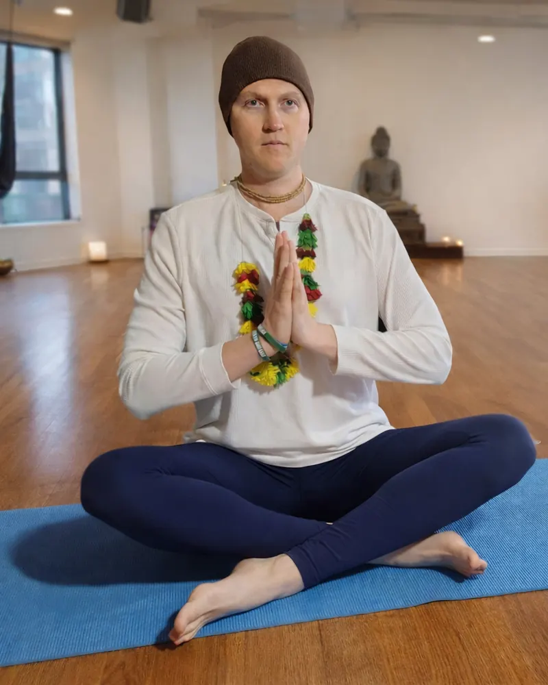

Vishal Das
Hatha · Alignment
Eight years on the path of Iyengar yoga, woven with Tai Chi and calisthenics, so precision can support freedom.
Get to Know VishalShow Less
Vishal Das has been walking the path of Iyengar yoga for eight years, shaped by a formative year of deep study at an Iyengar Institute that honed his understanding of alignment, precision, and the intelligence held within each posture. His classes reflect a rich synthesis of movement traditions. Between asanas, Vishal weaves in elements of Tai Chi and calisthenics, creating a practice that flows between stillness and dynamic movement, building core strength while awakening and sustaining energy throughout the body. At Yoga in the Grove, Vishal brings this integrated approach into a space of community and devotion, inviting students to explore not just what the body can do, but how movement itself can become a pathway to presence.
His teaching is grounded in the quiet rigor of Iyengar yoga, but animated by an even wider curiosity: how the body learns, adapts, and tells the truth when we actually listen. He's especially attentive to the small invisible actions: how the feet root, how the breath organizes the spine, how steadiness can be trained without hardening. Students often leave with a clearer sense of where they are in space, and a practical way to carry that awareness off the mat.
His aim is simple and oddly radical in a busy world: help people build a relationship with their own structure and energy that's both honest and kind. Whether you're new to yoga or refining a long-time practice, Vishal offers a container where precision supports freedom, so the work isn't just getting into a pose, but discovering the presence that's available inside it.